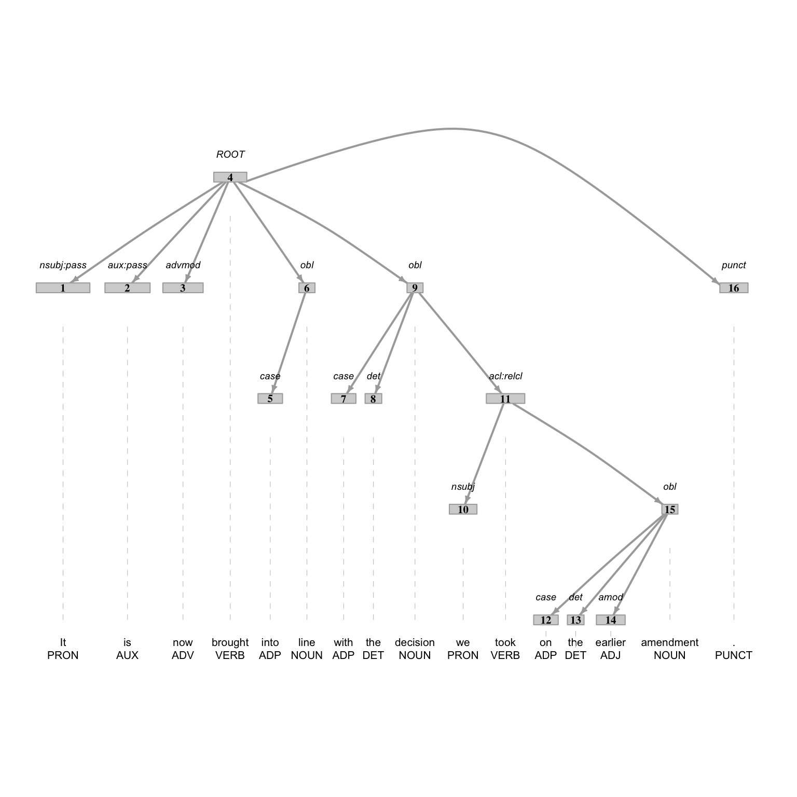
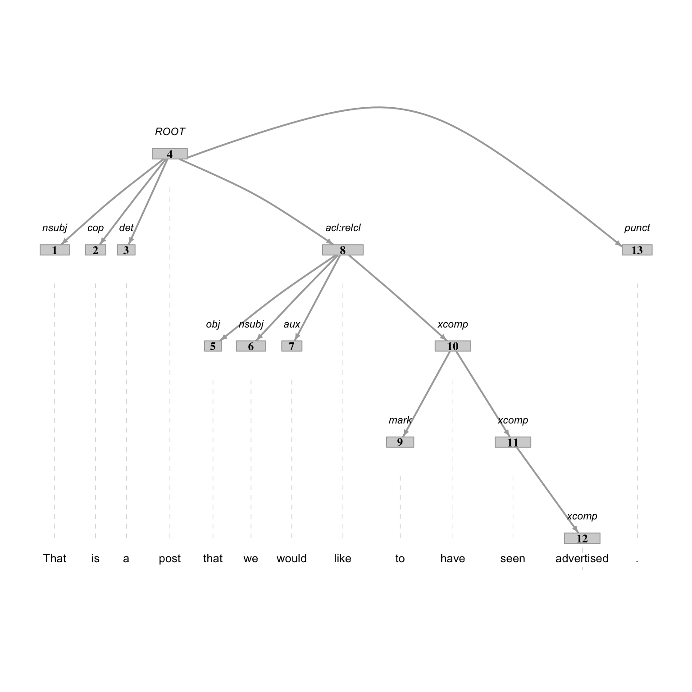

| variable | name | variable_type | description |
|---|---|---|---|
| doc_id | Document ID | numeric | Unique identification number for each document |
| type | Document Type | categorical | Type of document; either ‘Source’ (Spanish) or ‘Target’ (English) |
| line_id | Line ID | numeric | Unique identification number for each line in each document type |
| lines | Lines | categorical | Content of the lines in the document |
7 Transform
Nothing is lost. Everything is transformed.
— Michael Ende, The Neverending Story
In this chapter, we will focus on transforming curated datasets to refine and possibly expand their relational characteristics to align with our research. I will approach the transformation process by breaking it down into two sub-processes: preparation and enrichment. The preparation process involves normalizing and tokenizing text. The enrichment process involves recoding, generating, and integrating variables. These processes are not sequential but may occur in any order based on the researcher’s evaluation of the dataset characteristics and the desired outcome.
7.1 Preparation
In this section we will cover the processes of normalization and tokenization. These processes are particularly relevant for text analysis, as text conventions can introduce unwanted variability in the data and the unit of observation may need to be adjusted to align with the research question.
To illustrate these processes, we will use a curated version of the Europarl Corpus (Koehn 2005). This dataset contains transcribed source language (Spanish) and translated target language (English) from the proceedings of the European Parliament. The unit of observation is the lines variable whose values are lines of dialog. We will use this dataset to explore the normalization and tokenization processes.
The contents of the data dictionary for this dataset appears in Table 7.1.
Let’s read in the dataset CSV file with read_csv() and inspect the first lines of the dataset with slice_head() in Example 7.1.
Example 7.1
# Read in the dataset
europarl_tbl <-
read_csv(file = "../data/derived/europarl_curated.csv")
# Preview the first 10 lines
europarl_tbl |>
slice_head(n = 10)> # A tibble: 10 × 4
> doc_id type line_id lines
> <dbl> <chr> <dbl> <chr>
> 1 1965735 Source 1 "Reanudación del período de sesiones"
> 2 1 Target 1 "Resumption of the session"
> 3 1965736 Source 2 "Declaro reanudado el período de sesiones del Parlame…
> 4 2 Target 2 "I declare resumed the session of the European Parlia…
> 5 1965737 Source 3 "Como todos han podido comprobar, el gran \"efecto de…
> 6 3 Target 3 "Although, as you will have seen, the dreaded 'millen…
> 7 1965738 Source 4 "Sus Señorías han solicitado un debate sobre el tema …
> 8 4 Target 4 "You have requested a debate on this subject in the c…
> 9 1965739 Source 5 "A la espera de que se produzca, de acuerdo con mucho…
> 10 5 Target 5 "In the meantime, I should like to observe a minute' …This dataset includes 3,931,468 observations and four variables. The key variable for our purposes is the lines variable. This variable contains the text we will be working with. The other variables are metadata that may be of interest for our analyses.
Normalization
The process of normalizing datasets in essence is to sanitize the values of variable or set of variables such that there are no artifacts that will contaminate subsequent processing. It may be the case that non-linguistic metadata may require normalization but more often than not linguistic information is the most common target for normalization as text often includes artifacts from the acquisition process which will not be desired in the analysis.
Simply looking at the first 10 lines of the dataset from Example 7.1 gives us a clearer sense of the dataset structure, but, in terms of normalization procedures we might apply, it is likely not sufficient. We want to get a sense of any potential inconsistencies in the dataset, in particular in the lines variable. Since this is a large dataset with 3,931,468 observations, we will need to explore the dataset in more detail using procedures for summarizing and filtering data.
After exploring variations in the lines variable, I identified a number of artifacts in this dataset that we will want to consider addressing. These are included in Table 7.2.
| Description | Examples |
|---|---|
| Non-speech annotations |
(Abucheos), (A4-0247/98), (The sitting was opened at 09:00)
|
| Inconsistent whitespace |
5 % ,, , Palacio' s
|
| Non-sentence punctuation | - |
| Abbreviations |
Mr., Sr., Mme., Mr, Sr, Mme, Mister, Señor, Madam
|
| Text case |
The, the, White, white
|
These artifacts either may not be of interest or may introduce unwanted variability in the that could prove problematic for subsequent processing (e.g tokenization, calculating frequencies, etc.).
Identifying our normalization goals is an important first step. In this case, let’s just focus on removing parlimentary session descriptions for demonstration purposes. The next step is to identify the procedures that will accomplish this goal.
The majority of text normalization procedures incorporate the stringr package (Wickham 2023). This package provides a number of functions for manipulating text strings. The workhorse functions we will use for our tasks are the str_remove() and str_replace() functions. As the these functions give us the ability to remove or replace text based on literal strings and Regular Expressions.
Our first step, however, is to identify the patterns we want to remove or replace. For this, we can call on either the str_view() function or the str_detect() function inside a filter() function to identify the lines that contain the patterns we want to remove. We can also use the str_extract() and/ or str_extract_all() functions inside a mutate() function to extract the text that matches the pattern. In any of these cases, it can be helpful to use the slice_sample() function work with a small sample of the dataset to get a sense of the patterns we are working with as we develop a search pattern that does not over- or under-generalize the text we want to remove or replace. If we are too general, we may end up removing or replacing text that we want to keep. If we are too specific, we may not remove or replace all the text we want to remove or replace.
Let’s start by identifying non-parlimentary speech. In Example 7.2, we use str_detect() which detects a pattern in a character vector and returns a logical vector, TRUE if the pattern is detected and FALSE if it is not. In combination with filter() we can identify a variable with rows that match a pattern.
From the examples above, we can see that these instances are wrapped with parentheses ( and ). The text within the parentheses can vary, so we need a Regular Expression to do the heavy lifting. To start out we can match any one or multiple characters with .+. But it is important to recognize the + (and also the *) operators are ‘greedy’, meaning that if there are multiple matches, the longest match will be returned. In this case, we want to match the shortest match. To do this we can use the ? operator to make the + operator ‘lazy’. This will match the shortest match.
Example 7.2
# Load package
library(stringr)
# Identify non-speech lines
europarl_tbl |>
filter(str_detect(lines, "\\(.+?\\)")) |>
slice_sample(n = 10)> # A tibble: 10 × 4
> doc_id type line_id lines
> <dbl> <chr> <dbl> <chr>
> 1 3225772 Source 1260038 (PT) Señor Presidente, quisiera plantear dos pregunta…
> 2 3715842 Source 1750108 (El Parlamento decide la devolución a la Comisión)
> 3 1961715 Target 1961715 (Parliament adopted the resolution)
> 4 1429470 Target 1429470 27, originally Greens/EFA amendment in FEMM); binding…
> 5 51632 Target 51632 Question No 8 by (H-0376/00):
> 6 2482671 Source 516937 La Comisión propone proporcionar a las Agencias nacio…
> 7 1059628 Target 1059628 (The President cut off the speaker)
> 8 1507254 Target 1507254 in writing. - (LT) I welcomed this document, because …
> 9 2765325 Source 799591 (Aplausos)
> 10 2668536 Source 702802 Las preguntas que, por falta de tiempo, no han rec…The results from Example 7.2 show that we have identified the lines that contain at least one of the parliamentary session description annotations. A more targeted search to identify specific instances of the parliamentary session descriptions can be accomplished adding the str_extract_all() function as seen in Example 7.3.
Example 7.3
# Extract non-speech fragments
europarl_tbl |>
filter(str_detect(lines, "\\(.+?\\)")) |>
mutate(non_speech = str_extract_all(lines, "\\(.+?\\)")) |>
slice_sample(n = 10)> # A tibble: 10 × 5
> doc_id type line_id lines non_speech
> <dbl> <chr> <dbl> <chr> <list>
> 1 3225772 Source 1260038 (PT) Señor Presidente, quisiera plantear d… <chr [1]>
> 2 3715842 Source 1750108 (El Parlamento decide la devolución a la C… <chr [1]>
> 3 1961715 Target 1961715 (Parliament adopted the resolution) <chr [1]>
> 4 1429470 Target 1429470 27, originally Greens/EFA amendment in FEM… <chr [1]>
> 5 51632 Target 51632 Question No 8 by (H-0376/00): <chr [1]>
> 6 2482671 Source 516937 La Comisión propone proporcionar a las Age… <chr [2]>
> 7 1059628 Target 1059628 (The President cut off the speaker) <chr [1]>
> 8 1507254 Target 1507254 in writing. - (LT) I welcomed this documen… <chr [1]>
> 9 2765325 Source 799591 (Aplausos) <chr [1]>
> 10 2668536 Source 702802 Las preguntas que, por falta de tiempo,… <chr [1]>OK, that might not be what you expected. The str_extract_all() function returns a list of character vectors. This is because for any given line in lines there may be a different number of matches. To maintain the data frame as rectangular, a list is returned for each value of non_speech. We could expand the list into a data frame with the unnest() function from the tidyr package if our goal were to work with these matches. But that is not our aim. Rather, we want to know if we have multiple matches per line. Note that the information provided for the non_speech column by the tibble object tells use that we have some lines with muliple matches, as we can see in line 6 of our small sample. So good thing we checked!
Let’s now remove these parliamentary session description annotations from each line in the lines column. We turn to str_remove_all(), a variant of str_remove(), that, as you expect, will remove multiple matches in a single line. We will use the mutate() function to overwrite the lines column with the modified text. The code is seen in Example 7.4.
Example 7.4
# Remove non-speech fragments
europarl_tbl <-
europarl_tbl |>
mutate(lines = str_remove_all(lines, "\\(.+?\\)"))I recommend spot checking the results of this normalization step by running the code in Example 7.2 again, if nothing appears we’ve done our job.
When you are content with the results, drop the observations that have no text in the lines column given the entire line was non-speech. This can be done with the is.na() function and the filter() function as seen in Example 7.5.
Normalization goals will vary from dataset to dataset but the procedures often follow a similar line of attack to those outlined in this section. There are cases, however, in which normalization procedures are more easily accomplished after subsequent transformation steps or need to be post-poned to further the goals of other transformation steps. For example, standardizing abbreviated forms may be more easily accomplished after tokenization when each token is a word. Another example is the case of case conversion. Even if we are not directly interested in the case differences between words, certain generation procedures, Named Entity Recognition (NER) for example, may use case information to identify the names of people, locations, organizations, etc.. In these cases, it may be better to leave the case as is until after the generation step.
Tokenization
Another common transformation process that is particularly relevant for preparing text for analysis is tokenization. Tokenization is the process of segmenting units of language into components relevant for the research question. This includes breaking text in curated datasets into smaller units, such as words, \(n\)-grams, sentences, etc. or combining text into larger units relative to the original text.
The process of tokenization is fundamentally row-wise. By scaling the text units up or down, we change the unit of observation. It is important both for the research and the text processing to operationalize our language units. For example, while it may appear obvious to you what ‘word’ or ‘sentence’ means, a computer, and your reproducible research, needs a definition. This can prove tricker than it seems. For example, in English, we can segment text into words by splitting on whitespace. This works fairly well but there are some cases where this is not ideal. For example, in the case of contractions, such as don't, won't, can't, etc. the apostrophe is not a whitespace character. If we want to consider these contractions as separate words, then we need to consider a different tokenization strategy.
Furthermore, tokenization strategies can vary between languages. For German words are often compounded together, meaning many ‘words’ will not be captured by the whitespace convention. Whitespace may not even be relevant for word tokenization in logographic writing systems such as Chinese. The take home message is there is no one-size-fits-all tokenization strategy.
Let’s say we continue to work with the Europarl Corpus dataset. We have already removed non-speech annotations from the lines variable. Now we want to tokenize the text. We will start by tokenizing the text into words. If we envision what this should look like, we might imagine something like Table 7.3.
lines variable into word tokens.
| doc_id | type | line_id | token |
|---|---|---|---|
| 1 | Target | 2 | I |
| 1 | Target | 2 | declare |
| 1 | Target | 2 | resumed |
| 1 | Target | 2 | the |
| 1 | Target | 2 | session |
Comparing Table 7.3 to the fourth row of the output of Example 7.1, we can see that we want to segment the words in lines and then have each segment appear as a separate observation, retaining the relevant metadata variables.
This is a very common strategy in text analysis. So common, in fact, that the tidytext package (Robinson and Silge 2023) includes a function, unnest_tokens() that tokenizes text in just such a way. Various tokenization types can be specified including ‘characters’, ‘words’, ‘ngrams’, ‘sentences’ among others. We will use the ‘word’ tokenization type to recreate the structure we envisioned in Table 7.3.
In Example 7.6, we see set our output variable to token and our input variable to lines.
Example 7.6
# Load package
library(tidytext)
# Tokenize the lines into words
europarl_unigrams_tbl <-
europarl_tbl |>
unnest_tokens(
output = token,
input = lines,
token = "words"
)Let’s preview the very same lines we modeled in Table 7.3 to see the results of our tokenization.
# Preview
europarl_unigrams_tbl |>
filter(type == "Target", line_id == 2) |>
slice_head(n = 10)> # A tibble: 10 × 4
> doc_id type line_id token
> <dbl> <chr> <dbl> <chr>
> 1 2 Target 2 i
> 2 2 Target 2 declare
> 3 2 Target 2 resumed
> 4 2 Target 2 the
> 5 2 Target 2 session
> 6 2 Target 2 of
> 7 2 Target 2 the
> 8 2 Target 2 european
> 9 2 Target 2 parliament
> 10 2 Target 2 adjournedThe token column now contains our word tokens. One thing to note, however, is that text is lowercased by default. If we want to retain the original case, keep the original variable, or change the tokenization strategy, we can update the to_lower, drop, and token parameters, respectively.
As we derive datasets to explore, let’s also create bigram tokens. We can do this by changing the token parameter to "ngrams" and specifying the value for \(n\) with the n parameter. I will assign the result to europarl_bigrams_tbl as we will have two-word tokens, as seen in Example 7.7.
Example 7.7
# Tokenize the lines into bigrams
europarl_bigrams_tbl <-
europarl_tbl |>
unnest_tokens(
output = token,
input = lines,
token = "ngrams",
n = 2
)
# Preview
europarl_bigrams_tbl |>
filter(type == "Target", line_id == 2) |>
slice_head(n = 10)> # A tibble: 10 × 4
> doc_id type line_id token
> <dbl> <chr> <dbl> <chr>
> 1 2 Target 2 i declare
> 2 2 Target 2 declare resumed
> 3 2 Target 2 resumed the
> 4 2 Target 2 the session
> 5 2 Target 2 session of
> 6 2 Target 2 of the
> 7 2 Target 2 the european
> 8 2 Target 2 european parliament
> 9 2 Target 2 parliament adjourned
> 10 2 Target 2 adjourned onThe two-word token sequences for lines appear as observations in the europarl_bigrams_tbl dataset.
The most common tokenization strategy is to segment text into smaller units, often words. However, there are times when we may want text segements to be larger than the existing token unit, effectively collapsing over rows. For example, if we are working with a curated dataset which is tokenized by words, we may want to group the words into sentences. A couple considerations are in order, however. First, we need to be clear about what we mean by ‘sentence’ and how we will group the words into sentences. In some cases key cues for sentence boundaries, such as sentencial punctuation have been stripped from the text, making a simple defnition of a sentence difficult or impossible to be performed computationally. Second, we also need to be clear how we will handle the metadata variables. In other words, when we collapse over rows, we need to be aware and intentional about how we group these new units of observation.
7.2 Enrichment
Where preparation steps are focused on sanitizing and segmenting the text, enrichment steps are aimed towards augmenting the dataset either through recoding, generating, or integrating variables. These processes can prove invaluable for aligning the dataset with the research question and facilitating the analysis.
As a pratical example of these types of transformations, we’ll posit that we are conducting translation research. Specifically, we will set up an investigation into the effect of translation on the syntactic simplification of text. The basic notion is that when translators translate text from one language to another, they subconsciously simplify the text, relative to native texts (Liu and Afzaal 2021).
To address this research question, we will use the ENNTT corpus, introduced in Section 6.3.2. This data contains European Parliament proceedings and the type of text (native, non-native, or translation) from which the text was extracted. There is one curated dataset for each of the text types.
The data dictionary for the curated native dataset appears in Table 7.4.
| variable | name | variable_type | description |
|---|---|---|---|
| session_id | Session ID | categorical | Unique identifier for each session |
| speaker_id | Speaker ID | categorical | Unique identifier for each speaker |
| state | State | categorical | The country or region the speaker is from |
| session_seq | Session Sequence | ordinal | The order in which the session occurred |
| text | Text | categorical | The spoken text during the session |
| type | Type | categorical | The type of speaker. Natives in this dataset. |
All three curated datasets have the same variables. The unit of observation for each dataset is the text variable.
Before we get started, let’s consider what the transformed dataset might look like and what its variables mean. First, we will need to operationalize what we mean by syntactic simplification There are many measures of syntactic complexity (Szmrecsanyi 2004). For our purposes, we will focus on two measures of syntactic complexity: number of T-units and sentence length (in words). A T-unit is a main clause and all of its subordinate clauses. To calculate the number of T-units, we will need to identify the main clauses and their subordinate clauses. The sentence length is straightforward to calculate after word tokenization.
An idealized transformed dataset dictionary for this investigation should look something like Table 7.5.
| variable | variable_name | variable_type | description |
|---|---|---|---|
| doc_id | Document ID | integer | Unique identifier for each document. |
| type | Type | character | Type of text (native or translated). |
| t_units | T-units | integer | Number of T-units in the text. |
| word_len | Word Length | integer | Number of words in the text. |
We will be using the the native and translated datasets for our purposes so let’s go ahead and read in these datasets.
# Read in curated natives
enntt_natives_tbl <-
read_csv("data/enntt_natives_curated.csv")
# Read in curated translations
enntt_translations_tbl <-
read_csv("data/enntt_translations_curated.csv")Generation
The process of generation involves the addition of information to a dataset. This differs from other transformation procedures in that instead of manipulating, classifying, and/ or deriving information based on characteristics explicit in a dataset, generation involves deriving new information based on characteristics implicit in a dataset.
The most common type of operation involved in the generation process is the addition of linguistic annotation. This process can be accomplished manually by a researcher or research team or automatically through the use of pre-trained linguistic resources and/ or software. Ideally, the annotation of linguistic information can be conducted automatically. It is important to note, however, that the quality of the annotations is contingent on the quality of the pre-trained resources, their alignment with the language variety and register to be annotated, and the quality of the text to be annotated. To be clear, no annotation method, whether manual or automatic is guaranteed to be perfectly accurate, but we must be aware of the limitations of the annotation method we choose.
To identify the main clauses and their subordinate clauses in our datasets, we will need to derive syntactic annotation information from the ENNTT text variable.
As fun as it would be to hand-annotate the ENNTT corpus, we will instead turn to automatic linguistic annotation. Specifically, we will use the udpipe package (Wijffels 2023) which provides an interface for annotating text using pre-trained models from the Universal Dependencies (UD) project (Nivre et al. 2020). The UD project is an effort to develop cross-linguistically consistent treebank annotation for a variety of languages.
Our first step, then, is to peruse the available pre-trained models for the languages we are interested in and selected the most register-aligned models. The models, model names, and licensing information are documented in the udpipe package and can be accessed by running ?udpipe::udpipe_download_model() in the R console. For illustrative purposes, the english treebank model from the https://github.com/bnosac/udpipe.models.ud repository which is released under the CC-BY-SA license. This model is trained on various sources including news, Wikipedia, and web data of various genres.
Let’s set the stage by providing an overview of the annotation process.
- Load the
udpipepackage. - Select the pre-trained model to use and the directory where the model will be stored in your local environment.
- Prepare the dataset to be annotated (if necessary). This includes ensuring that the dataset has a column of text to be annotated and a grouping column. By default, the names of these columns are expected to be
textanddoc_id, respectively. Thetextcolumn needs to be a character vector and thedoc_idcolumn needs to be a unique index for each text to be annotated. - Annotate the dataset. The result returns a data frame.
Steps 3 and 4 are repeated for the enntt_natives_tbl and the enntt_translations_tbl datasets. For brevity, I will only show the code for the dataset for the natives. Additionally, I will subset the dataset to 10,000 randomly selected lines for both datasets, as in Example 7.8 for the natives. Syntactic annotation is a computationally expensive operation and the natives and translations datasets contain 116,341 and 738,597 observations, respectively.
Example 7.8
With the subsetted enntt_natives_tbl object, let’s execute steps 1-4, as seen in Example 7.9.
Example 7.9
# Load package
library(udpipe)
# Model and directory
model <- "english"
model_dir <- "../data/"
# Prepare the dataset to be annotated
enntt_natives_prepped_tbl <-
enntt_natives_tbl |>
mutate(doc_id = row_number()) |>
select(doc_id, text)
# Annotate the dataset
enntt_natives_ann_tbl <-
udpipe(
x = enntt_natives_prepped_tbl,
object = model,
model_dir = model_dir
) |>
tibble()
# Preview
glimpse(enntt_natives_ann_tbl)> Rows: 264,124
> Columns: 17
> $ doc_id <chr> "1", "1", "1", "1", "1", "1", "1", "1", "1", "1", "1", "…
> $ paragraph_id <int> 1, 1, 1, 1, 1, 1, 1, 1, 1, 1, 1, 1, 1, 1, 1, 1, 1, 1, 1,…
> $ sentence_id <int> 1, 1, 1, 1, 1, 1, 1, 1, 1, 1, 1, 1, 1, 1, 1, 1, 1, 1, 1,…
> $ sentence <chr> "It is extremely important that action is taken to ensur…
> $ start <int> 1, 4, 7, 17, 27, 32, 39, 42, 48, 51, 58, 63, 66, 73, 77,…
> $ end <int> 2, 5, 15, 25, 30, 37, 40, 46, 49, 56, 61, 64, 71, 75, 82…
> $ term_id <int> 1, 2, 3, 4, 5, 6, 7, 8, 9, 10, 11, 12, 13, 14, 15, 16, 1…
> $ token_id <chr> "1", "2", "3", "4", "5", "6", "7", "8", "9", "10", "11",…
> $ token <chr> "It", "is", "extremely", "important", "that", "action", …
> $ lemma <chr> "it", "be", "extremely", "important", "that", "action", …
> $ upos <chr> "PRON", "AUX", "ADV", "ADJ", "SCONJ", "NOUN", "AUX", "VE…
> $ xpos <chr> "PRP", "VBZ", "RB", "JJ", "IN", "NN", "VBZ", "VBN", "TO"…
> $ feats <chr> "Case=Nom|Gender=Neut|Number=Sing|Person=3|PronType=Prs"…
> $ head_token_id <chr> "4", "4", "4", "0", "8", "8", "8", "4", "10", "8", "13",…
> $ dep_rel <chr> "expl", "cop", "advmod", "root", "mark", "nsubj:pass", "…
> $ deps <chr> NA, NA, NA, NA, NA, NA, NA, NA, NA, NA, NA, NA, NA, NA, …
> $ misc <chr> NA, NA, NA, NA, NA, NA, NA, NA, NA, NA, NA, NA, NA, NA, …There is quite a bit of information which is returned from udpipe(). Note that the input lines have been tokenized by word. Each token includes the token, lemma, part of speech (upos and xpos), morphological features (feats), and syntactic relationships (head_token_id and dep_rel). The token_id keeps track of the token’s position in the sentence and the sentence_id keeps track of the sentence’s position in the original text. Finally, the doc_id column and its values correspond to the doc_id in the enntt_natives_tbl dataset.
The number of variables in the udpipe() annotation output is quite overwhelming. However, these attributes come in handy for manipulating, extracting, and plotting information based on lexical and syntactic patterns. See the dependency tree in Figure 7.1 for an example of the syntactic information that can be extracted from the udpipe() annotation output.

In Figure 7.1 we see the syntactic tree for a sentence in the ENNTT natives dataset. Each node is labeled with the token_id which provides the linear ordering of the sentence. Above the nodes the dep_relation, or dependency relationship label is provided. These labels are based on the UD project’s dependency relations. We can see that the ‘ROOT’ relation is at the top of the tree and corresponds to the verb ‘brought’. ‘ROOT’ relations mark predicates in the sentence. Not seen in the example tree, ‘cop’ relation is a copular, or non-verbal predicate and should be included. These are the key syntactic pattern we will use to identify main clauses for T-units.
Recoding
Recoding processes can be characterized by the creation of structural changes which are derived from values in variables effectively recasting values as new variables to enable more direct access in our analyses.
Specifically, we will need to identify and count the main clauses and their subordinate clauses to create a variable t_units from our natives and translations annotations objects. In the UD project’s listings, the relations ‘ccomp’ (clausal complement), ‘xcomp’ (open clausal complement), and ‘acl:relcl’ (relative clause), as seen in Figure 7.1 are subordinate clauses. Furthermore, we will also need to count the number of words in each sentence to create a variable word_len.
To calculate T-units and words per sentence we turn to the dplyr package. We will use the group_by() function to group the dataset by doc_id and sentence_id and then use the summarize() function to calculate the number of T-units and words per sentence, where a T-unit is the combination of the sum of main clauses and sum of subordinante clauses. The code is seen in Example 7.10.
Example 7.10
# Calculate the number of T-units and words per sentence
enntt_natives_syn_comp_tbl <-
enntt_natives_ann_tbl |>
group_by(doc_id, sentence_id) |>
summarize(
main_clauses = sum(dep_rel %in% c("ROOT", "cop")),
subord_clauses = sum(dep_rel %in% c("ccomp", "xcomp", "acl:relcl")),
t_units = main_clauses + subord_clauses,
word_len = n()
) |>
ungroup()
# Preview
glimpse(enntt_natives_syn_comp_tbl)> Rows: 10,199
> Columns: 6
> $ doc_id <chr> "1", "10", "100", "1000", "10000", "1001", "1002", "100…
> $ sentence_id <int> 1, 1, 1, 1, 1, 1, 1, 1, 1, 1, 1, 1, 1, 1, 1, 1, 1, 1, 1…
> $ main_clauses <int> 1, 0, 0, 0, 2, 0, 0, 1, 1, 0, 1, 1, 1, 0, 2, 0, 1, 1, 1…
> $ subord_clauses <int> 3, 2, 1, 0, 1, 2, 1, 1, 0, 2, 1, 0, 3, 2, 0, 4, 2, 1, 1…
> $ t_units <int> 4, 2, 1, 0, 3, 2, 1, 2, 1, 2, 2, 1, 4, 2, 2, 4, 3, 2, 2…
> $ word_len <int> 21, 25, 27, 15, 40, 43, 29, 23, 13, 30, 33, 9, 68, 35, …A quick spot check of some sentences calculations enntt_natives_syn_comp_tbl dataset against the enntt_natives_ann_tbl is good to ensure that the calculation is working as expected. In Figure 7.2 we see a sentence that has a word length of 13 and a T-unit value of 5.

Now we can drop the intermediate columns we created to calculate our key syntactic complexity measures using select() to indicate those that we do want to keep, as seen in Example 7.11.
Example 7.11
# Select columns
enntt_natives_syn_comp_tbl <-
enntt_natives_syn_comp_tbl |>
select(doc_id, sentence_id, t_units, word_len)Now we can repeat the process for the ENNTT translated dataset. I will assign the result to enntt_translations_syn_comp_tbl. The next step is to join the sentences from the annotated data frames into our datasets so that we have the information we set out to generate for both datasets. Then we will combine the native and translations datasets into a single dataset. These steps are part of the transformation process and will be covered in the next section.
Integration
One final class of transformations that can be applied to curated datasets to enhance their informativeness for a research project is the process of integrating two or more datasets. There are two primary types of integrations: joins and concatenation. Joins can be row- or column-wise operations that combine datasets based on a common attribute or set of attributes. Concatenation is exclusively a row-wise operation that combines datasets that share the same attributes.
Of the two types, joins are the most powerful and sometimes more difficult to understand. When two datasets are joined at least one common variable must be shared between the two datasets. The common variable(s) are referred to as keys. The keys are used to match observations in one dataset with observations in another dataset by serving as an index.
There are a number of join types. The most common are left, full, semi, and anti. The type of join determines which observations are retained in the resulting dataset. Let’s see this in practice. First, let’s create two datasets to join with a common variable key, as seen in Example 7.12.
Example 7.12
a_tbl <-
tibble(
key = c(1, 2, 3, 5, 8),
a = letters[1:5]
)
a_tbl
b_tbl <-
tibble(
key = c(1, 2, 4, 6, 8),
b = letters[6:10]
)
b_tbl> # A tibble: 5 × 2
> key a
> <dbl> <chr>
> 1 1 a
> 2 2 b
> 3 3 c
> 4 5 d
> 5 8 e> # A tibble: 5 × 2
> key b
> <dbl> <chr>
> 1 1 f
> 2 2 g
> 3 4 h
> 4 6 i
> 5 8 jThe a_tbl and the b_tbl datasets share the key variable, but the values in the key variable are not identical. The two datasets share values 1, 2, and 8. The a_tbl dataset has values 3 and 5 in the key variable and the b_tbl dataset has values 4 and 6 in the key variable.
If we apply a left join to the a_tbl and b_tbl datasets, the result will be a dataset that retains all of the observations in the a_tbl dataset and only those observations in the b_tbl dataset that have a match in the a_tbl dataset. The result is seen in Example 7.13.
Example 7.13
left_join(x = a_tbl, y = b_tbl, by = "key")> # A tibble: 5 × 3
> key a b
> <dbl> <chr> <chr>
> 1 1 a f
> 2 2 b g
> 3 3 c <NA>
> 4 5 d <NA>
> 5 8 e jNow, if the key variable has the same name, R will recognize and assume that this is the variable to join on and we don’t need the by = argument, but if there are multiple potential key variables, we use by = to specify which one to use.
A full join retains all observations in both datasets, as seen in Example 7.14.
Example 7.14
full_join(x = a_tbl, y = b_tbl)> # A tibble: 7 × 3
> key a b
> <dbl> <chr> <chr>
> 1 1 a f
> 2 2 b g
> 3 3 c <NA>
> 4 5 d <NA>
> 5 8 e j
> 6 4 <NA> h
> 7 6 <NA> iLeft and full joins maintain or increase the number of observations. On the other hand, semi and anti joins aim to decrease the number of observations. A semi join retains only those observations in the left dataset that have a match in the right dataset, as seen in Example 7.15.
Example 7.15
semi_join(x = a_tbl, y = b_tbl)> # A tibble: 3 × 2
> key a
> <dbl> <chr>
> 1 1 a
> 2 2 b
> 3 8 eAnd an anti join retains only those observations in the left dataset that do not have a match in the right dataset, as seen in Example 7.16.
Example 7.16
anti_join(x = a_tbl, y = b_tbl)> # A tibble: 2 × 2
> key a
> <dbl> <chr>
> 1 3 c
> 2 5 dOf these join types, the left join and the anti join are some of the most common to encounter in research projects.
With this in mind, let’s return to our syntactic simplification investigation. Recall that we started with two curated ENNTT datasets: the natives and translations. We manipulated these datasets subsetting them to 10,000 randomly selected lines, prepped them for annotation by adding a doc_id column and dropping all columns except text, and then annotated them using the udpipe package. We then calculated the number of T-units and words per sentence and created the variables t_units and word_len for each.
These steps produced two datasets for both the natives and for the translations. The first dataset for each is the annotated data frame. The second is the data frame with the sytactic complexity measures we calculated. The annotated data frames are named enntt_natives_ann_tbl and enntt_translations_ann_tbl. The data frames with the syntactic complexity measures are named enntt_natives_syn_comp_tbl and enntt_translations_syn_comp_tbl.
In the end, we want a dataset that looks something like Table 7.6.
| doc_id | type | t_units | word_len | text |
|---|---|---|---|---|
| 1 | natives | 1 | 5 | I am happy right now. |
| 2 | translation | 3 | 11 | I think that John believes that Mary is a good person. |
To create this unified dataset, we will need to apply joins and concatenation. First, we will join the prepped datasets with the annotated datasets. Then, we will concatenate the two resulting datasets.
Let’s start by joining the annotated datasets (enntt_natives_ann_tbl and enntt_translations_ann_tbl) with the datasets with the syntactic complexity calculations (enntt_natives_syn_comp_tbl and enntt_translations_syn_comp_tbl). In these joins, we can see that the prepped and calculated datasets share a couple variables, doc_id and sentence_id, in Example 7.17.
Example 7.17
# Preview datasets to join
enntt_natives_ann_tbl |>
slice_head(n = 3)> # A tibble: 3 × 17
> doc_id paragraph_id sentence_id sentence start end term_id token_id token
> <chr> <int> <int> <chr> <int> <int> <int> <chr> <chr>
> 1 1 1 1 It is extr… 1 2 1 1 It
> 2 1 1 1 It is extr… 4 5 2 2 is
> 3 1 1 1 It is extr… 7 15 3 3 extr…
> # ℹ 8 more variables: lemma <chr>, upos <chr>, xpos <chr>, feats <chr>,
> # head_token_id <chr>, dep_rel <chr>, deps <chr>, misc <chr>enntt_natives_syn_comp_tbl |>
slice_head(n = 3)> # A tibble: 3 × 4
> doc_id sentence_id t_units word_len
> <chr> <int> <int> <int>
> 1 1 1 4 21
> 2 10 1 2 25
> 3 100 1 1 27The doc_id and sentence_id variables are both keys that we will use to join the datasets. The reason being that if we only use one of the two we will not align the two datasets at the sentence level. Only the combination of doc_id and sentence_id isolates the sentences for which we have syntactic complexity measures. Beyond a having common variable (or variables in our case), we must also ensure that join key variables are of the same vector type in both data frames and that we are aware of any differences in the values. From the output in Example 7.17, we can see that the doc_id and sentence_id variables aligned in terms of vector type; doc_id is character and sentence_id is integer in both data frames. If they happened not to be, there types would need to be adjusted.
Now, we need to check for differences in the values. We can do this by using the setequal() function. This function returns TRUE if the two vectors are equal and FALSE if they are not. If the two vectors are not equal, the function will return the values that are in one vector but not the other. So if one has 10001 and the other doesn’t we will get FALSE. Let’s see this in practice, as seen in Example 7.18.
Example 7.18
So the values are the same. The final check is to see if the vectors are of the same length. We know the values are the same, but we don’t know if the values are repeated. We do this by simply comparing the length of the vectors, as seen in Example 7.19.
Example 7.19
So they are not the same length. Using the nrow() function, I can see that the annotated dataset has 264,124 observations and the calculated dataset has 10,199 observations. The annotation data frames will have many more observations due to the fact that the unit of observations is word tokens. The recoded syntactic complexity data frames’ unit of observation is the sentence.
To appreciate the difference in the number of observations, let’s look at the first 10 observations of the natives annotated frame for just the columns of interest, as seen in Example 7.20.
Example 7.20
# Preview the annotated dataset
enntt_natives_ann_tbl |>
select(doc_id, sentence_id, sentence, token) |>
slice_head(n = 10)> # A tibble: 10 × 4
> doc_id sentence_id sentence token
> <chr> <int> <chr> <chr>
> 1 1 1 It is extremely important that action is taken to e… It
> 2 1 1 It is extremely important that action is taken to e… is
> 3 1 1 It is extremely important that action is taken to e… extr…
> 4 1 1 It is extremely important that action is taken to e… impo…
> 5 1 1 It is extremely important that action is taken to e… that
> 6 1 1 It is extremely important that action is taken to e… acti…
> 7 1 1 It is extremely important that action is taken to e… is
> 8 1 1 It is extremely important that action is taken to e… taken
> 9 1 1 It is extremely important that action is taken to e… to
> 10 1 1 It is extremely important that action is taken to e… ensu…The annotated data frames have a lot of redundancy in for the join variables and the sentence variable that we want to add to the calculated data frames. We can reduce the redundancy by using the distinct() function from the dplyr package. In this case we want all observations where doc_id, sentence_id and sentence are distinct. We then select these variables with distinct(), as seen in Example 7.21.
Example 7.21
# Reduce annotated data frames to unique sentences
enntt_natives_ann_distinct <-
enntt_natives_ann_tbl |>
distinct(doc_id, sentence_id, sentence)
enntt_translations_ann_distinct <-
enntt_translations_ann_tbl |>
distinct(doc_id, sentence_id, sentence)We now have two datasets that are ready to be joined with the recoded datasets. The next step is to join the two. We will employ a left join where the syntactic complexity data frames are on the left and the join variables will be both the doc_id and sentence_id variables. The code is seen in Example 7.22.
Example 7.22
# Join the native datasets
enntt_natives_transformed_tbl <-
left_join(
x = enntt_natives_syn_comp_tbl,
y = enntt_natives_ann_distinct,
by = c("doc_id", "sentence_id")
)
# Preview
glimpse(enntt_natives_transformed_tbl)> Rows: 10,199
> Columns: 5
> $ doc_id <chr> "1", "10", "100", "1000", "10000", "1001", "1002", "1003",…
> $ sentence_id <int> 1, 1, 1, 1, 1, 1, 1, 1, 1, 1, 1, 1, 1, 1, 1, 1, 1, 1, 1, 1…
> $ t_units <int> 4, 2, 1, 0, 3, 2, 1, 2, 1, 2, 2, 1, 4, 2, 2, 4, 3, 2, 2, 1…
> $ word_len <int> 21, 25, 27, 15, 40, 43, 29, 23, 13, 30, 33, 9, 68, 35, 16,…
> $ sentence <chr> "It is extremely important that action is taken to ensure …# Join the translations datasets
enntt_translations_transformed_tbl <-
left_join(
x = enntt_translations_syn_comp_tbl,
y = enntt_translations_ann_distinct,
by = c("doc_id", "sentence_id")
)
# Preview
glimpse(enntt_translations_transformed_tbl)> Rows: 10,392
> Columns: 5
> $ doc_id <chr> "1", "10", "100", "1000", "10000", "1001", "1002", "1003",…
> $ sentence_id <int> 1, 1, 1, 1, 1, 1, 1, 1, 1, 1, 1, 1, 1, 1, 1, 1, 1, 1, 1, 1…
> $ t_units <int> 0, 2, 0, 1, 3, 0, 3, 2, 3, 3, 2, 0, 1, 0, 3, 1, 0, 1, 2, 2…
> $ word_len <int> 24, 31, 5, 39, 44, 26, 67, 23, 46, 28, 24, 68, 19, 18, 36,…
> $ sentence <chr> "To my great surprise , on leaving the sitting , I found t…The two data frames now have the same columns and we are closer to our final dataset. The next step is to move toward concatenating the two datasets. Before we do that, we need to do some preparation. First, and most important, we need to add a type column to each dataset. This column will indicate whether the sentence is a native or a translation. The second is that our doc_id does not serve as a unique identifier for the sentences. Only in combination with sentence_id can we uniquely identify a sentence.
So our plan will be to add a type column to each dataset specifying the values for all the observations in the respective dataset. Then we will concatenate the two datasets. Note, if we combine them before, distiguishing the type will be more difficult. After we concatenate the two datasets, we will add a doc_id column that will serve as a unique identifier for the sentences and drop the sentence_id column. OK, that’s the plan. Let’s execute it in Example 7.23.
Example 7.23
# Add a type column
enntt_natives_transformed_tbl <-
enntt_natives_transformed_tbl |>
mutate(type = "natives")
enntt_translations_transformed_tbl <-
enntt_translations_transformed_tbl |>
mutate(type = "translations")
# Concatenate the datasets
enntt_transformed_tbl <-
bind_rows(
enntt_natives_transformed_tbl,
enntt_translations_transformed_tbl
)
# Overwrite the doc_id column with a unique identifier
enntt_transformed_tbl <-
enntt_transformed_tbl |>
mutate(doc_id = row_number()) |>
select(doc_id, type, t_units, word_len, text = sentence)
# Preview
glimpse(enntt_transformed_tbl)> Rows: 20,591
> Columns: 5
> $ doc_id <int> 1, 2, 3, 4, 5, 6, 7, 8, 9, 10, 11, 12, 13, 14, 15, 16, 17, 18…
> $ type <chr> "natives", "natives", "natives", "natives", "natives", "nativ…
> $ t_units <int> 4, 2, 1, 0, 3, 2, 1, 2, 1, 2, 2, 1, 4, 2, 2, 4, 3, 2, 2, 1, 1…
> $ word_len <int> 21, 25, 27, 15, 40, 43, 29, 23, 13, 30, 33, 9, 68, 35, 16, 53…
> $ text <chr> "It is extremely important that action is taken to ensure tha…The output of Example 7.23 now looks like Table 7.6. We have a dataset that has the syntactic complexity measures for both the natives and the translations. We can now write this dataset to disk and document it in the data dictionary.
Activities
In the following activities, you will review the concept of transforming data to prepare it for analysis and working to implement these steps with R. This includes preparation and enrichment of curated datasets using normalization, tokenization, recoding, generation, and/ or integration strategies.
Summary
In this chapter we covered the process of transforming datasets. The goal is to manipulate the curated dataset to make it align better for analysis. We covered various types of transformation procedures from text normalization to data frame integrations. In any given research project some or all of these steps will be employed –but not necessarily in the order presented in this chapter. It is not uncommon to mix procedures as well. The etiology of the transformation is as unique as the data that you are working with.
Since you are applying techniques that have a significant factor on the shape and contents of your dataset(s) it is important to perform data checks to ensure that the transformations are working as expected. You may not catch everything, and some things may not be caught until later in the analysis process, but it is important to do as much as you can as early as you can.
In line with the reproducible research principles, it is important to write the transformed dataset to disk and to document it in the data dictionary. This is especially important if you are working with multiple datasets. Good naming conventions also come into play. Choosing descriptive names is so easily overlooked by your present self but so welcomed by your future self.